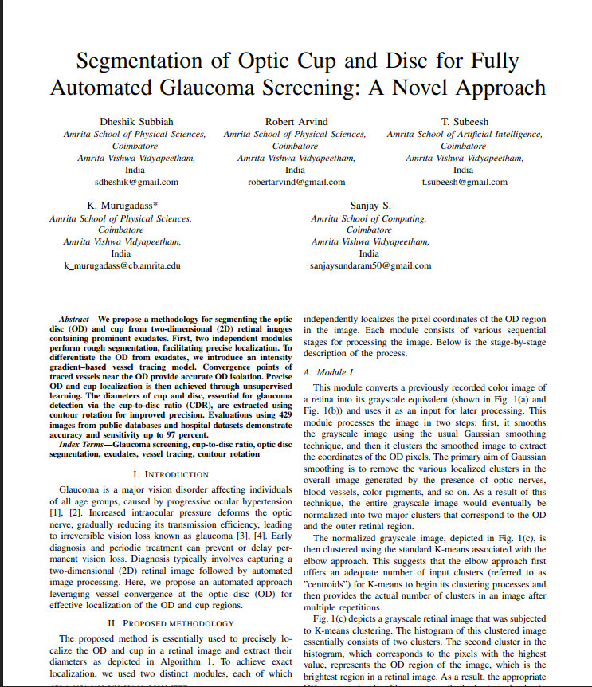
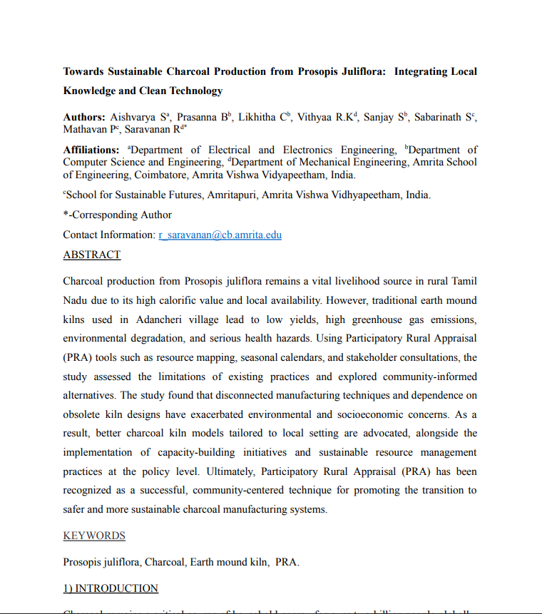
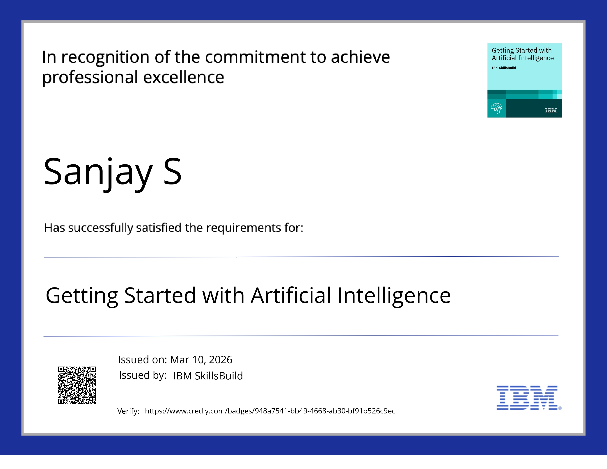
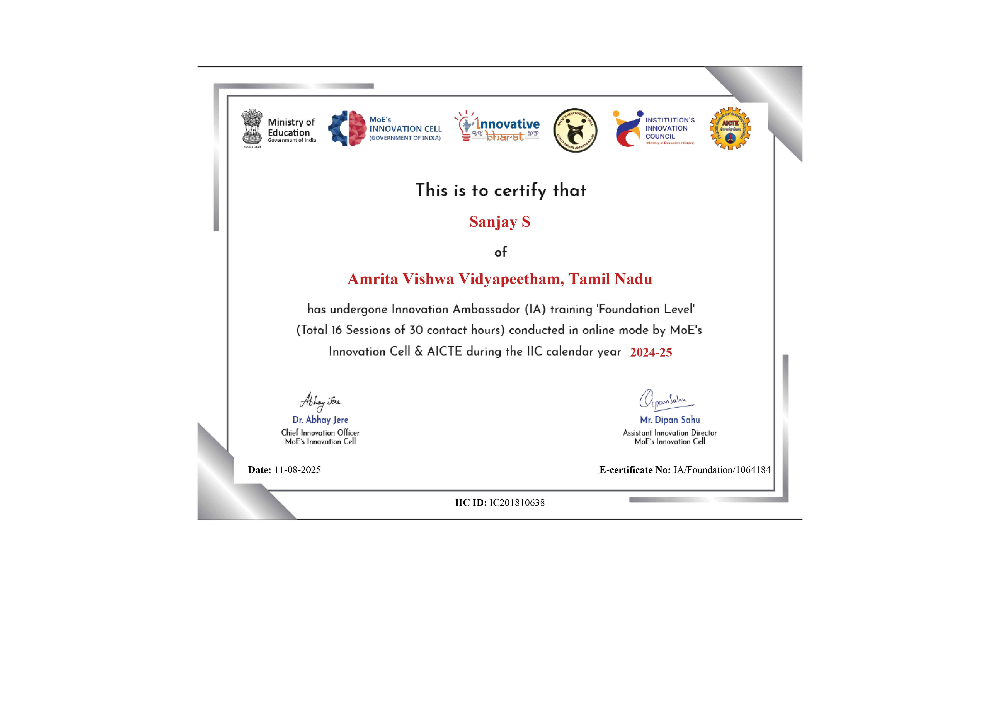
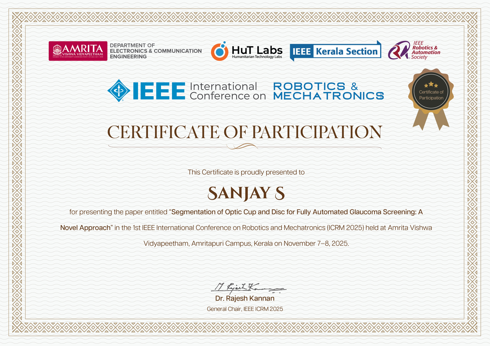
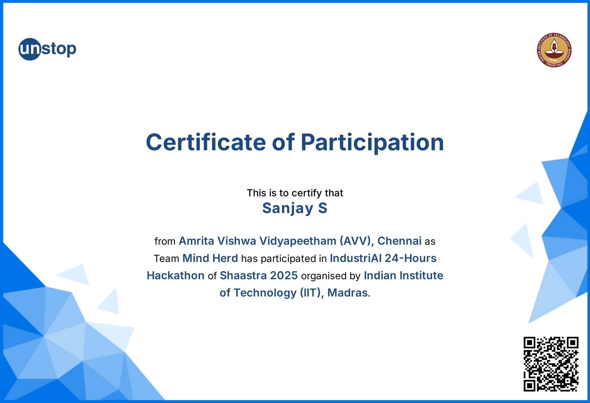
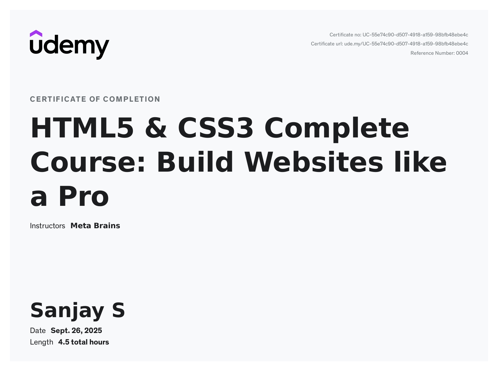
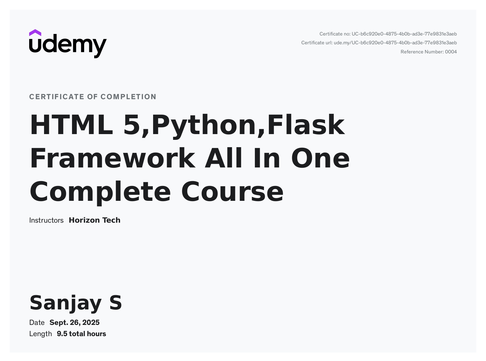

Resume Overview
A concise profile of education, capabilities, certifications, and engineering strengths.
Core Focus
Experience
Availability
Education Timeline
Computer Science Degree - Amrita Vishwa Vidyapeetham
Studying advanced CS fundamentals, software engineering, machine learning foundations and problem Solving.
TN State Board
Developed a strong academic foundation along with leadership, communication, and teamwork skills through active participation in technical events, competitions, and extracurricular activities.
Research Papers Published

View Research Paper
Segmentation of Optic Cup and Disc for Fully Automated Glaucoma Screening

View Research Paper
Towards Sustainable Charcoal Production from Prosopis Juliflora
Certifications

View Certificate
Getting Started with Artificial Intelligence

View Certificate
Innovation Ambassador (IA) Training – Foundation Level

View Certificate
IEEE International Conference on Robotics & Mechatronics (ICRM 2025)

View Certificate
Certificate of Recognition – Anokha 2026

View Certificate
IndustriAI 24-Hours Hackathon – Shaastra 2025

View Certificate
HTML5 & CSS3 Complete Course: Build Websites Like a Pro

View Certificate